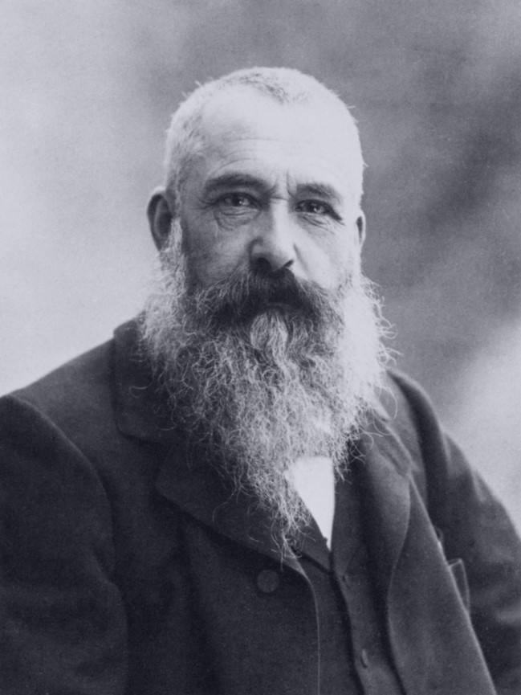

Claude Monet
Oscar-Claude Monet 14 November 1840-5 December 1926) was a French painter, a founder of French Impressionist painting and the most consistent and prolific practitioner of the movement's philosophy of expressing one's perceptions before nature, especially as applied to plein air landscape painting.

The term "Impressionism" is derived from the title of his painting Impression, soleil levant (Impression, Sunrise), which was exhibited in 1874 in the first of the independent exhibitions mounted by Monet and his associates as an alternative to the Salon de Paris.
Monet's ambition of documenting the French countryside led him to adopt a method of painting the same scene many times in order to capture the changing of light and the passing of the seasons. From 1883, Monet lived in Giverny, where he purchased a house and property and began a vast landscaping project which included lily ponds that would become the subjects of his best-known works. He began painting the water lilies in 1899, first in vertical views with a Japanese bridge as a central feature and later in the series of large-scale paintings that was to occupy him continuously for the next 20 years of his life.
Monet has been described as "the driving force behind Impressionism".Crucial to the art of the Impressionist painters was the understanding of the effects of light on the local colour of objects, and the effects of the juxtaposition of colours with each other. Monet's long career as a painter was spent in the pursuit of this aim.
His first series exhibited as such was of Haystacks, painted from different points of view and at different times of the day. Fifteen of the paintings were exhibited at the Galerie Durand-Ruel in 1891. In 1892 he produced what is probably his best-known series, twenty-six views of Rouen Cathedral. In these paintings Monet broke with painterly traditions by cropping the subject so that only a portion of the facade is seen on the canvas. The paintings do not focus on the grand Medieval building, but on the play of light and shade across its surface, transforming the solid masonry.
Monet, with a scientific precision, has given us an unparalleled and unexcelled rVecord of the passing of time as seen in the movement of light over identical forms.